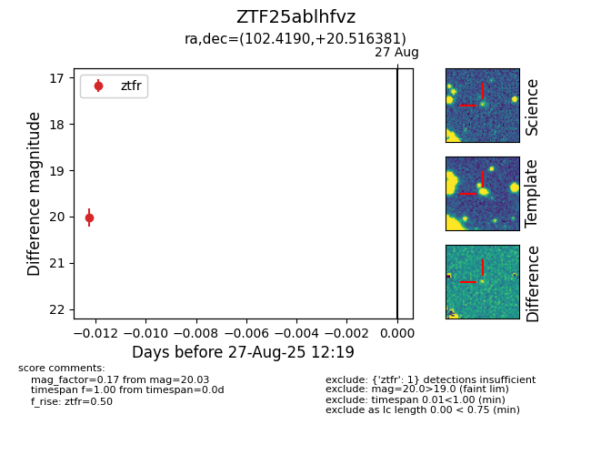

Target ZTF25ablhfvz at 2025-08-27 12:19, see:
FINK: fink-portal.org/ZTF25ablhfvz
Lasair: lasair-ztf.lsst.ac.uk/objects/ZTF25ablhfvz
ALeRCE: alerce.online/object/ZTF25ablhfvz
alt names
ZTF25ablhfvz (ztf,fink)
coordinates:
equatorial (ra, dec) = (102.4190,+20.51638)
galactic (l, b) = (194.3309,+8.82422)
photometry
last ztfr=20.03
1 ztfr detections
